|
|
HELP FIND THE FOLLOWING LOCATIONS
PAGE 44
THE
SAINT:
Portrait
of Brenda (John
Gilling:
Summer 1968)
Upper Phillimore Gardens, London, W8 - Mrs. White
(Petra Davies) looks across the road to Tony (Dave Prowse) from the
door of the
meditation centre.
(Identified by Geoff Dodd, March 2024)
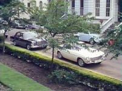
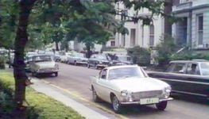
THE
SAINT: The Lawless Lady (Jeremy Summers: 1963)
Cambridge Road/Kilburn Park Road, London NW6 – Simon stops at
a road junction, but when he sees the Countess Marova's
Rolls-Royce he pulls out
sharply into its path.
(Idenified by Geoff Dodd, April 2023)
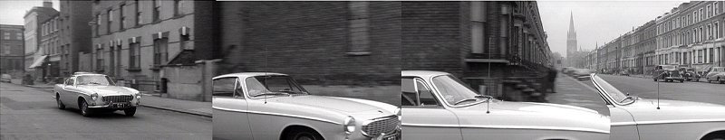
Unknown 1 – View through the back of Simon’s Volvo at the junction.
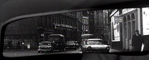
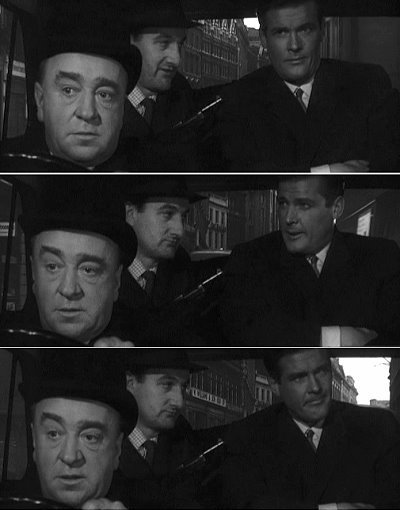
THE
SAINT:
The
Chequered Flag
(Leslie Norman: February 1965)
O21: Hadley Common
– On the way home from Beau's party, Simon and Catherine Marshall drive
to
Oscar Newley's
workshop in a Rolls Royce (Hadley Common
gateway to The Crescent).
(Identified by Geoff Dodd, November 2011)


Unknown 1 – Road junction – on the way to the test track, Hunter (Neil McCarthy) pulls over at a lay-by and sabotages the car.
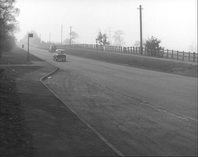
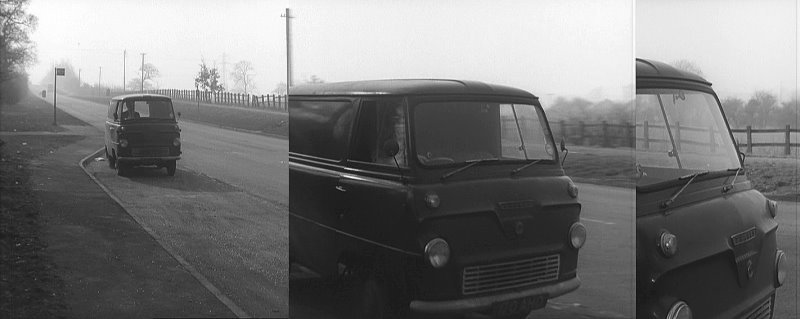
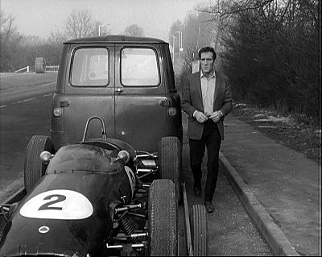
J6:
The A6(T) (now the B556)/Rectory Lane Junction, Ridge Hill, Shenley –
Beau watches as Simon leaves the
test track, in his Volvo, on his way to find Hunter (from The Waggon
and Horses and Redwell Wood Farm).
Confirmed by Geoff Dodd, Auguist 2021
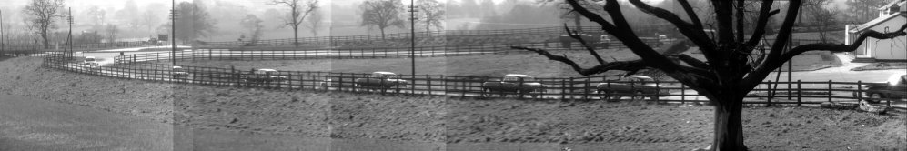
St Claire's, 38-40 Church Crescent, St Albans – Lee and
Simon do to visit Hunter
at his boarding house.
(Identified by Sietse Postma, July 2023)
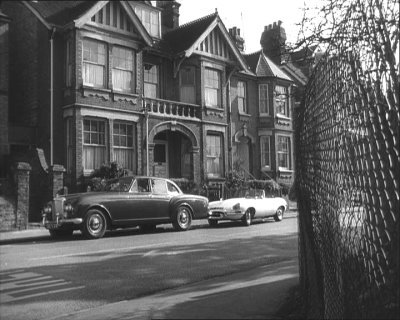
Unknown 2 – Hunter’s Surrey bungalow.
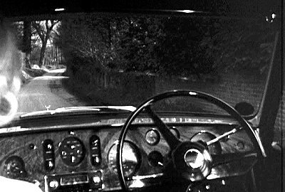
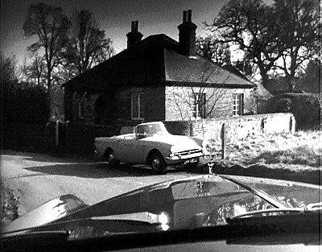
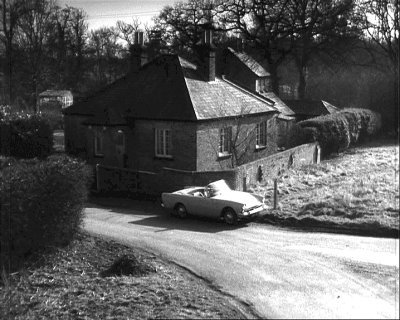
Think you know a spot? Need a bigger image? Email me.
< Previous | Index | Avengerland | Next >
Copyright © 2023 Anthony R. McKay